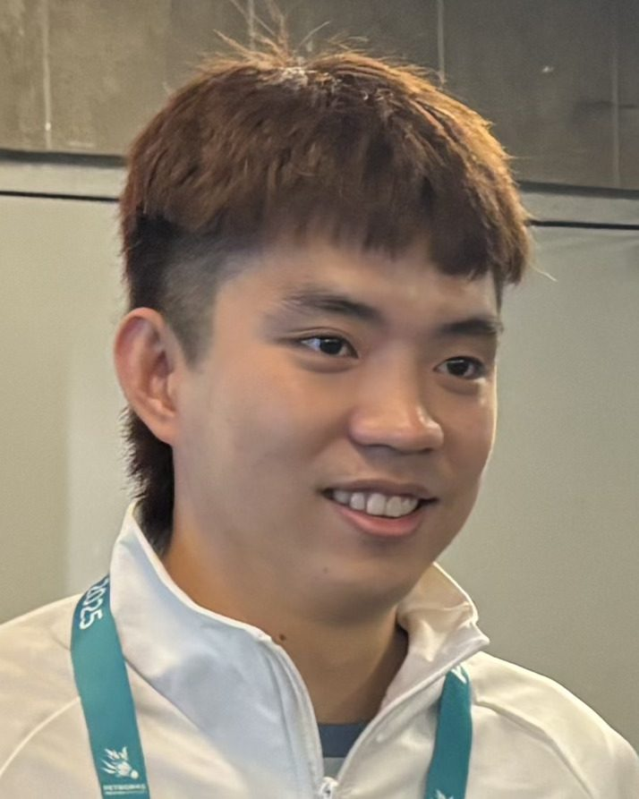

Олимпийские виды

Олимпийские виды
«Победы любят тишину»: Трефилов осадил Шишкарёва за обещание медалей Олимпиады-2028
Триумфатор Рио-2016 призвал не горячиться с прогнозами, пока чиновники лишь пытаются выбить wild card в Лос-Анджелес.

Олимпийские виды
Вань Вэйчон и Ти Кайвунь прервали 27-летнюю засуху Малайзии на турнире Hong Kong Open в парном разряде
Малайзийский дуэт в двух партиях переиграл индонезийцев Карнандо и Мартина, оформив второй титул Мирового тура BWF в сезоне-2026.

Олимпийские виды
Игнатова (Трусова) взяла второе серебро Гран-при и приблизилась к финалу в Китае
Серебряный призёр Олимпиады-2022 стала второй на Skate America через неделю после второго места на Кубке Китая и идёт второй в общем зачёте, когда до конца серии остаются два этапа.

Олимпийские виды
Китай выиграл четыре золота на этапе Кубка мира по конькобежному спорту в Пекине
Нин Чжунъянь победил на 1000 м с рекордом катка и на 1500 м, а Лянь Цзывэнь и Гао Тинъюй выиграли по одному забегу на 500 м на «Ледяной ленте».

Олимпийские виды
Российский гимнаст Даниил Смирнов завоевал золото Юношеских Олимпийских игр
Юный чемпион в многоборье продемонстрировал железные нервы под международным давлением, заслужив восторженные отзывы от олимпийского чемпиона Никиты Нагорного.